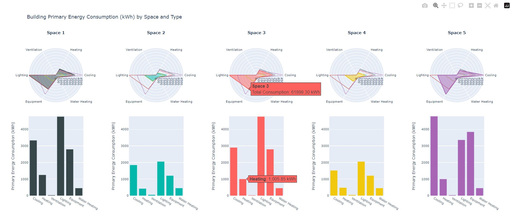

Radar chart code
Building Energy Consumption
Visualization of Building Primary Energy Consumption by Space and Type
This script generates a visual representation of building primary energy consumption by space and type using radar charts and bar charts. The data is read from multiple sheets of an Excel file, each representing a different space. Radar charts are used to compare different categories of energy consumption within each space, while bar charts visualize the total consumption for each category.
The script uses the Plotly library for creating interactive plots, and the data is fetched from an Excel file specified by the user.
Categories of energy consumption: - Cooling - Heating - Ventilation - Lighting - Equipment - Water Heating
Each space is represented by a separate radar chart and a corresponding bar chart.
- Modules:
pandas: Used for data manipulation and analysis.
plotly.graph_objects: Used for creating radar and bar charts.
plotly.subplots: Used for creating subplots with multiple charts.
- Functions:
load_data(file_path: str, sheet_names: list) -> dict: Loads data from the specified Excel file sheets and returns it as a dictionary of DataFrames.
prepare_radar_data(df: pd.DataFrame, categories: list) -> list: Prepares radar chart data from a DataFrame for a given set of categories.
create_figures(spaces_data: dict, categories: list) -> go.Figure: Creates a Plotly figure with radar and bar charts for each space.
show_figures(fig: go.Figure) -> None: Displays the final Plotly figure with all charts.
- Usage:
To use this script, provide the path to your Excel file and ensure that the sheet names correspond to the spaces you want to visualize. The script will generate and display an interactive Plotly figure with radar and bar charts.
- Visualization_4.Radar.create_figures(spaces_data: dict, categories: list) Figure[source]
Creates a Plotly figure with radar and bar charts for each space.
- Parameters:
spaces_data (dict) – Dictionary containing processed data for each space.
categories (list) – List of categories for the radar and bar charts.
- Returns:
A Plotly figure object with the generated charts.
- Return type:
go.Figure
- Visualization_4.Radar.load_data(file_path: str, sheet_names: list) dict[source]
Loads data from the specified Excel file sheets.
- Parameters:
file_path (str) – Path to the Excel file containing the data.
sheet_names (list) – List of sheet names to be loaded from the Excel file.
- Returns:
A dictionary where keys are sheet names and values are DataFrames.
- Return type:
dict
- Visualization_4.Radar.prepare_radar_data(df: DataFrame, categories: list) list[source]
Prepares radar chart data from a DataFrame for a given set of categories.
- Parameters:
df (pd.DataFrame) – DataFrame containing the energy consumption data.
categories (list) – List of categories for the radar chart.
- Returns:
List of dictionaries with radar chart data for each product/system.
- Return type:
list